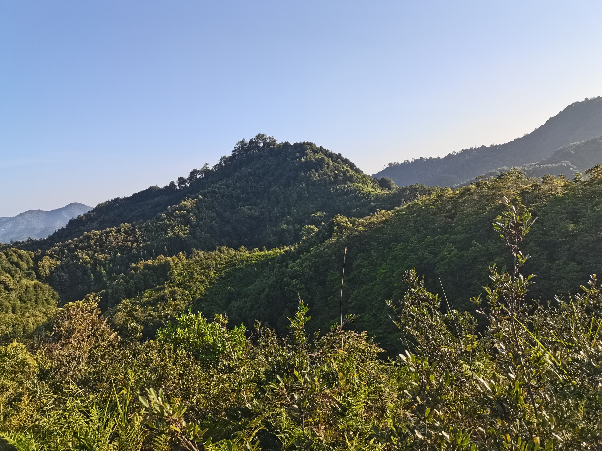

01
Multidimensional biodiversity–ecosystem functioning
Genetic diversity · Species diversity · Multitrophic interactions · Forest productivity
At BEF-China, I study how multiple dimensions of biodiversity shape forest productivity, survival, and structure. This work shows that genetic and species diversity act through functional diversity and interactions across trophic levels.
